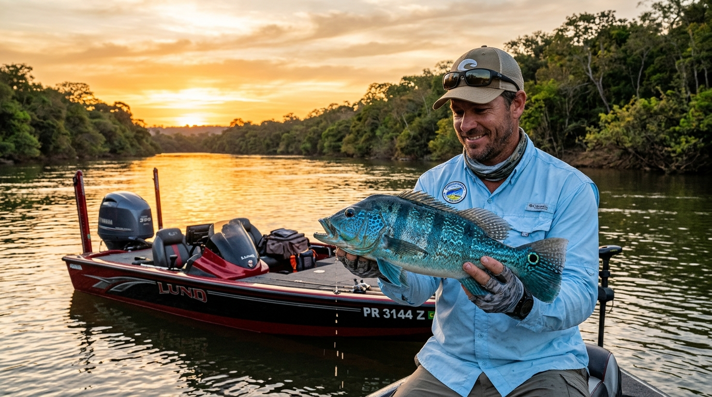
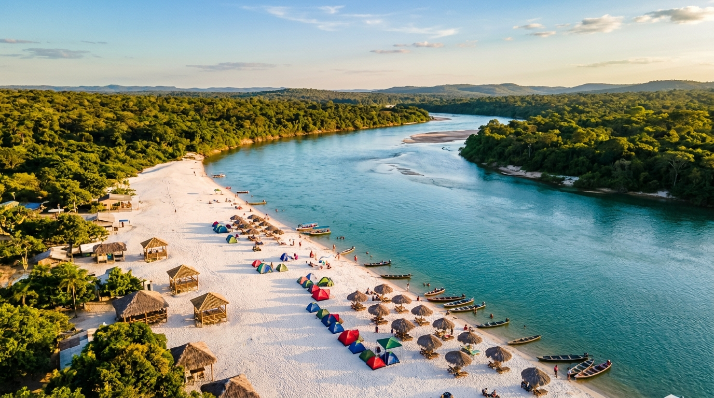
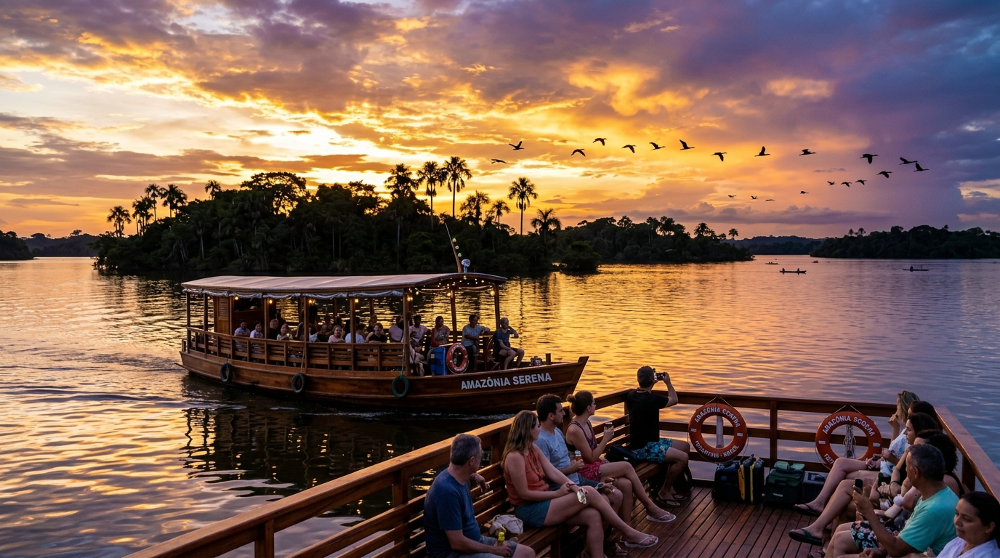
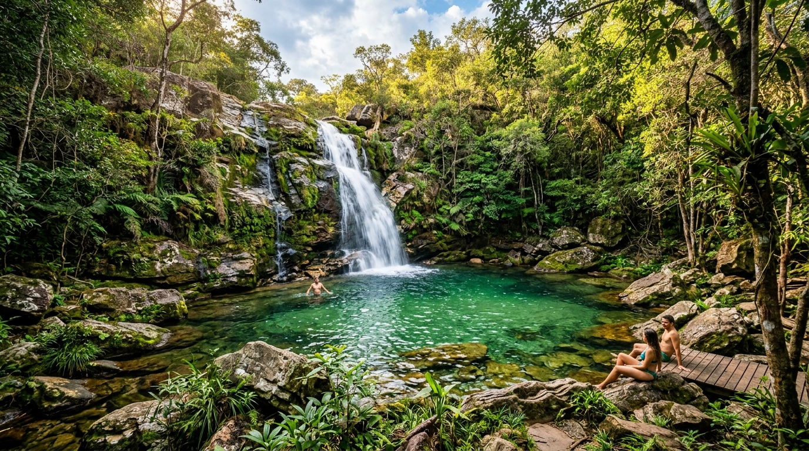
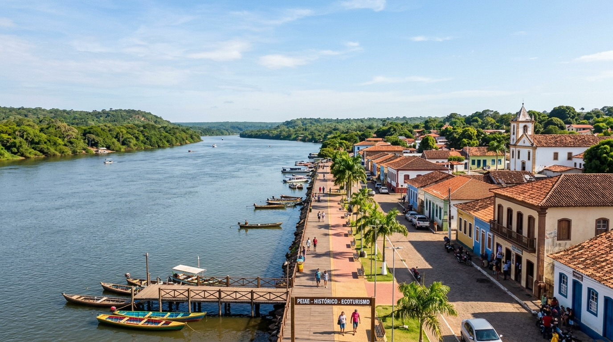
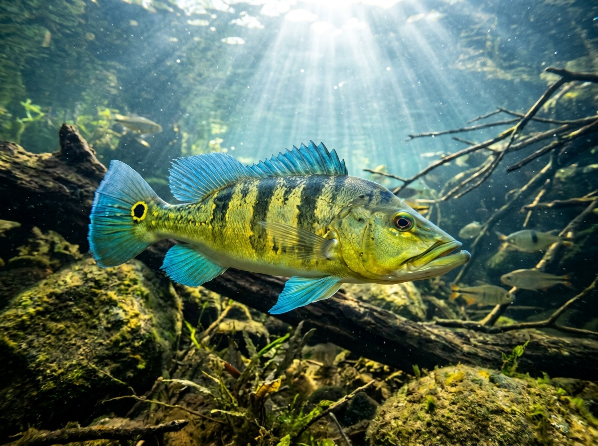
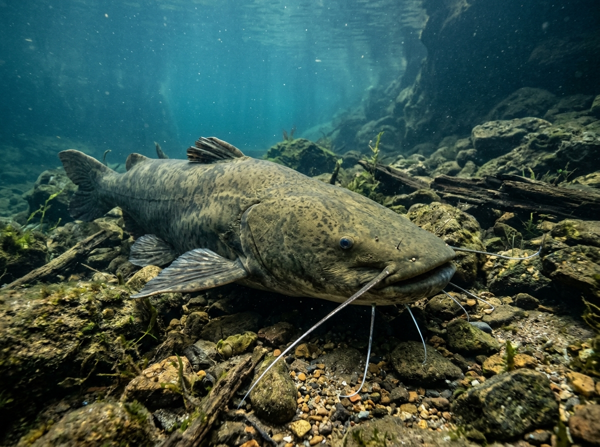
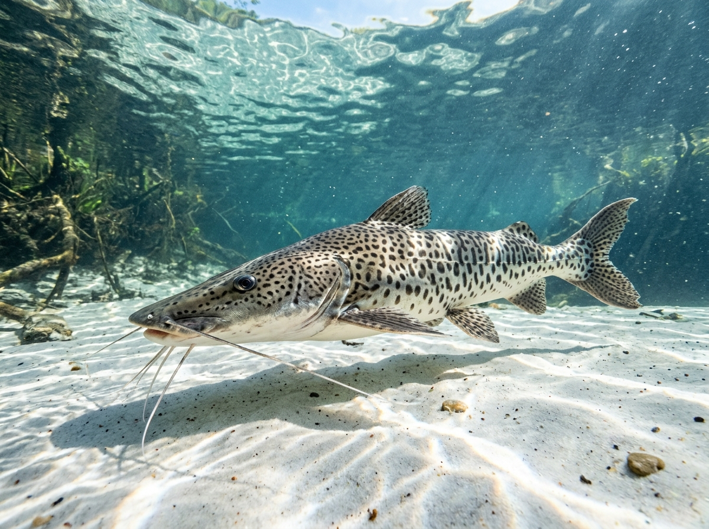
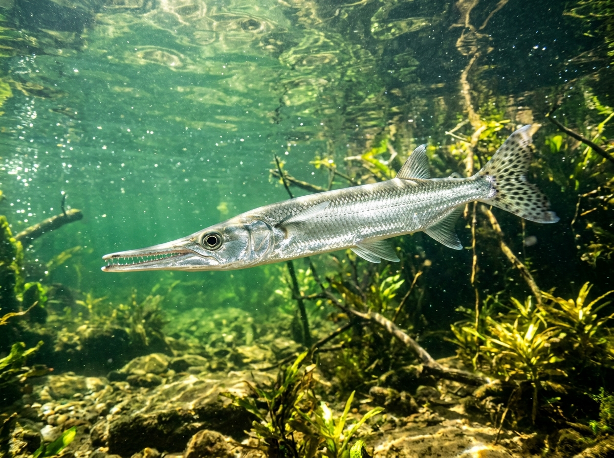
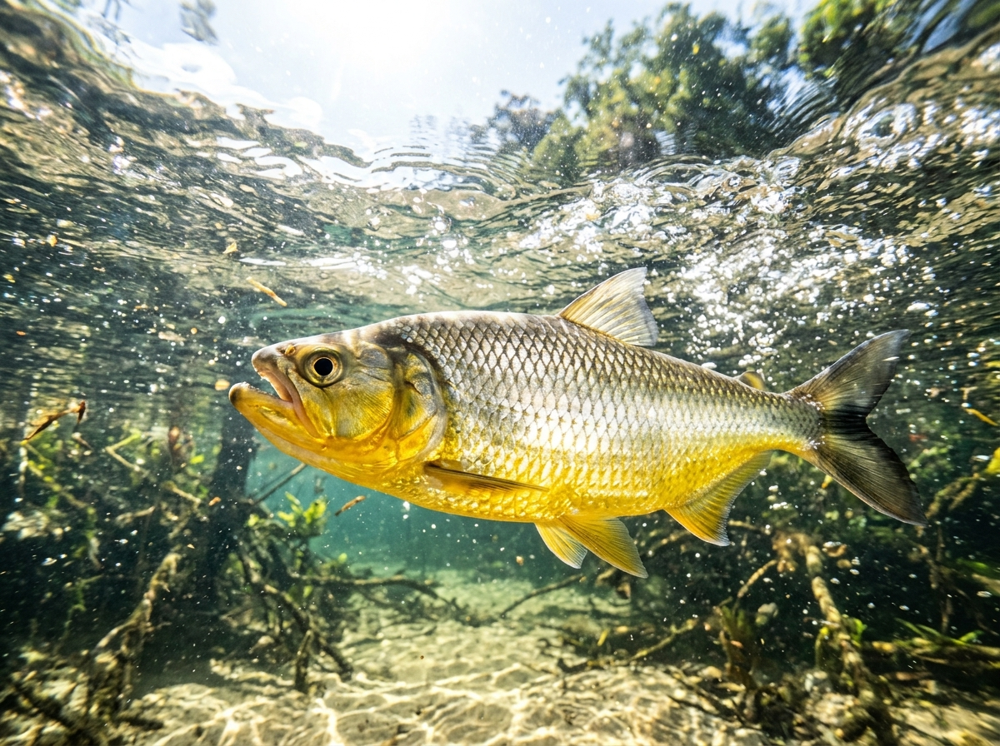

Descubra Peixe – TO: o destino definitivo para quem busca os lendários tucunarés azuis, o encanto das águas cristalinas da Praia da Tartaruga e a liberdade de acampar sob o céu estrelado do cerrado.
Piloteiros Credenciados
Pesque e Solte (Cota Zero)
De Ilhas & Lago Navegável
Seja para bater iscas artificiais em busca do tucunaré gigante ou para relaxar nas praias de água doce com sua família, temos o roteiro ideal.

Alta PerformanceDiária completa com guia de pesca nativo, motor elétrico de pedal, sonar de última geração e navegação pelos melhores pontos do Rio Tocantins e lago Angical.

Família & LazerTravessia em voadeira homologada para a praia mais famosa do Tocantins. Areias alvas, quiosques com água de coco, peixe frito na brasa e águas calmas para crianças.
Acampe sob o céu mais estrelado do Brasil em um banco de areia privado no meio do Rio Tocantins. Experiência de fogueira, churrasco ribeirinho e segurança total.

Romântico & GruposNavegação contemplativa pelas ilhas do arquipélago fluvial de Peixe durante o entardecer tocantinense. Deck de madeira com música ambiente e degustação de petiscos.

Aventura & TrilhaTrilha ecológica em meio à vegetação nativa do cerrado com chegada a piscinas naturais de águas esmeralda e quedas d'água revigorantes nas serras de Peixe.

Pesca PesadaAventura noturna nos poços profundos do Rio Tocantins em busca dos gigantes do fundo, acompanhado de piloteiros com décadas de tradição ribeirinha.
O Rio Tocantins abriga uma das maiores diversidades de peixes esportivos do planeta. Pratique sempre o Pesque e Solte (Cota Zero) para preservar nossos troféus.

Cichla piquiti
Até 65cm+ • Iscas de Superfície
Zungaro zungaro
Até 60kg+ • Poços Profundos
Pseudoplatystoma corruscans
Corredeiras e Gargantas
Boulengerella cuvieri
Veloz • Saltos Acrobáticos
Pellona castelnaeana
Dourado do Tocantins • FlyLocalizada a apenas 15 minutos de voadeira do porto de Peixe, a Praia da Tartaruga é formada por extensas ilhas de areia fina que surgem no Rio Tocantins. Além de águas termais mornas e transparentes, o local oferece espaço seguro para quem deseja montar acampamento à beira d'água.
Áreas demarcadas, ponto de energia solar, banheiros secos ecológicos e descarte correto de resíduos.
Grandes shows regionais, torneios de futevôlei de areia e gastronomia típica tocantinense.
Personalize sua pescaria, acampamento ou passeio em Peixe - TO e receba o valor calculado em tempo real com garantia de atendimento direto.
Clique nas imagens para expandir em tela cheia.
Localizada no sul do Tocantins com acesso rodoviário pavimentado de excelente qualidade.
Desembarque no Aeroporto de Palmas (PMW) e siga rumo sul:
Para quem já está ou vem pelo eixo sul da BR-153:
Ponto de encontro com os piloteiros e barqueiros credenciados:
Tudo o que você precisa saber antes de embarcar para o Rio Tocantins.